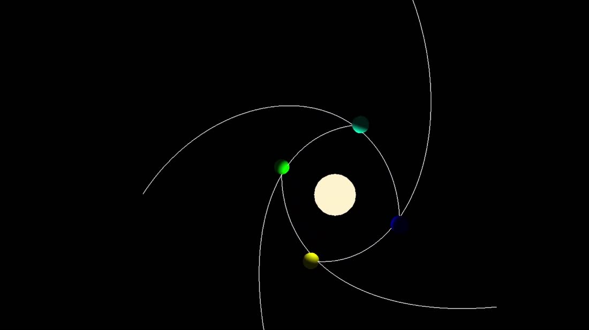
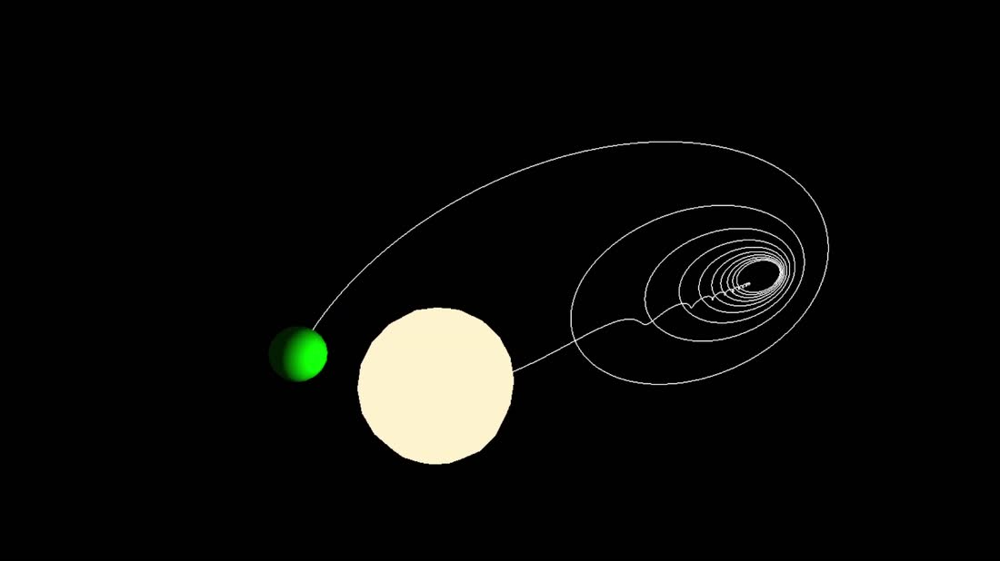
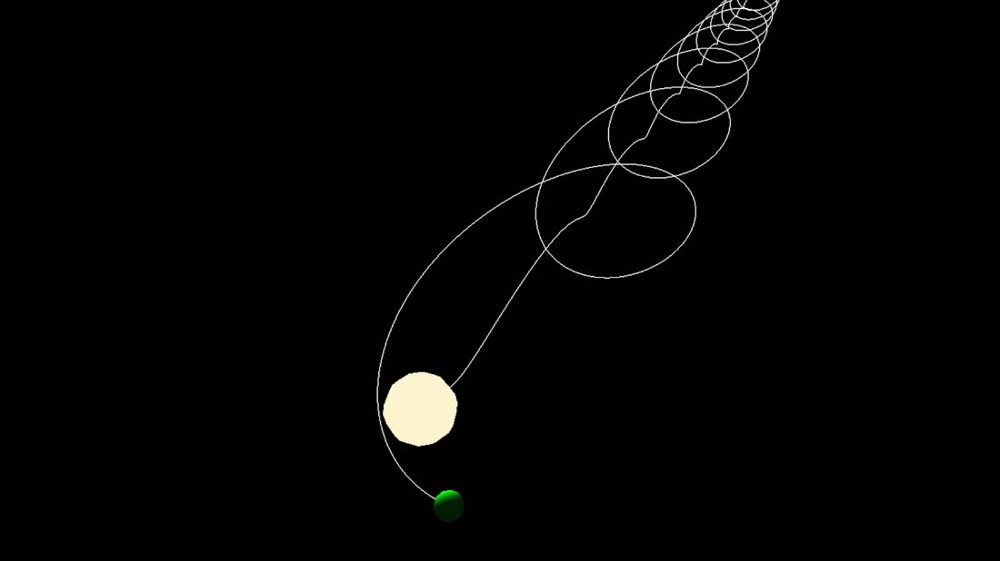

A few hundred lines of C++ between Newton's law of gravitation and the pixels on screen, with no engine in between.
Every frame, the simulation evaluates the gravitational pull between every pair of bodies, accelerates each one, moves it, and draws it. Nothing is precomputed and no path is scripted: the orbits, the precession and the occasional ejection all fall out of the same three lines of physics.
I wrote it to understand a graphics pipeline from the bottom up. Building the mesh by hand, filling the buffers myself and writing the shaders meant I had to know what every stage was actually doing, rather than trusting an engine to do it for me.
Each body builds its own UV sphere on the CPU, 10 stacks by 10 sectors, two triangles per quad, interleaved as position and colour into a single vertex buffer.
Thin VAO, VBO and EBO wrapper classes over the raw GL calls. Every body owns its vertex array and buffer, sets up its own attribute pointers, and deletes them in its destructor.
The vertex shader transforms by the model matrix and a combined camera matrix, and hands the fragment shader a world-space position and normal. The fragment shader does ambient plus a Lambert diffuse term, with an emissive branch so the star and the trails ignore lighting.
A look-at view matrix and a perspective projection, multiplied on the CPU and uploaded as one uniform. WASD to move, space and control for height, mouse-look with the pitch clamped just short of vertical.
Every body appends its position to a trail each frame. The trail is rebuilt as a vertex array, uploaded to a shared dynamic buffer and drawn as a GL_LINE_STRIP with blending on.
A naive O(n²) pass: for each pair, the distance and unit direction, then F = G·m₁·m₂ / r², divided back out to an acceleration. Bodies that overlap have their velocity flipped and damped, which stands in for a collision.
A little over a minute, from clean orbits to a body being flung out of the system. The trails are the point: they turn a simulation you have to watch into a picture you can read.


